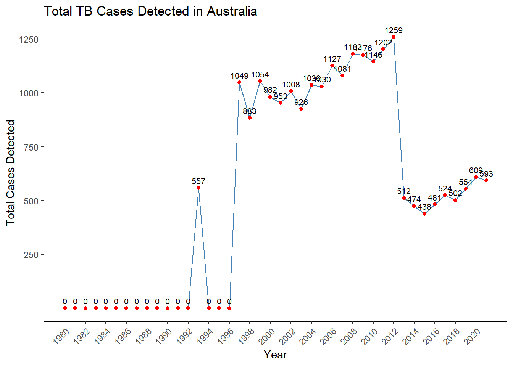

library(tidyverse)
tb <- read.csv("data/TB_notifications_2023-08-21.csv")
tb_dictionary <- read.csv("data/TB_data_dictionary_2023-08-21.csv")Q3
Exercise 3
The World Health Organisation (WHO) routinely reports statistics on tuberculosis. WHO says: “Every year, 10 million people fall ill with tuberculosis (TB). Despite being a preventable and curable disease, 1.5 million people die from TB each year – making it the world’s top infectious killer.” This question is about the statistics reported by WHO on TB notifications.
The data and dictionary were downloaded from https://www.who.int/teams/global-tuberculosis-programme/data. We have made them available in the template repo.
a. How many countries are recorded?
glimpse(unique(tb$country)) chr [1:217] "Afghanistan" "Albania" "Algeria" "American Samoa" "Andorra" ...There are 217 countries recorded.
b. What is the earliest and latest years in the data?
tb_date_sort <- tb |>
arrange(year)
min(tb_date_sort$year)[1] 1980max(tb_date_sort$year)[1] 2021The earliest year in the data is 1980 while the latest is 2021.
c. There are numerous ways that TB is detected, and this is reflected in the data as new_sp, new_sn, new_su, new_ep and new_oth. Create a new variable which sums these values for each year, for each country. Make an appropriate plot to show the counts for Australia over time. Describe the pattern, and try to explain it, which might require searching for more information about TB reporting.
tb_total <- tb %>%
select(1:11) %>%
mutate(total_detected = rowSums(select(., new_sp, new_sn, new_su, new_ep, new_oth), na.rm = TRUE))
tb_total_aus <- tb_total |>
filter(country %in% 'Australia')ggplot(tb_total_aus, aes(
x = year,
y = total_detected,
label = total_detected
)) +
geom_line(color = "steelblue") +
geom_point(size = 1.5, color = "red") +
geom_text(vjust = -0.7,
hjust = 0.5,
size = 2.75) +
labs(x = "Year",
y = "Total Cases Detected") +
ggtitle("Total TB Cases Detected in Australia") +
scale_x_continuous(breaks = seq(min(tb_total_aus$year), max(tb_total_aus$year), by = 2)) +
scale_y_continuous(breaks = c(250, 500, 750, 1000, 1250, 1500)) +
theme_classic() +
theme(axis.text.x = element_text(angle = 45, hjust = 1))
We observe that the first TB cases reported are in 1993, totaling to 557 and then dropping to 0 till 1996. There is a sharp increase to 1049 in 1997 followed by a series of crests and troughs till 2012 of 1259 cases but the general trend was a rising trend. Afterwards, there is a sharp decline to 512 cases in 2013 and a further decrease to a point of 438 in 2015. These decreases were followed by a general rising trend till 2020, totaling the cases to 693.
d. Subset the data to Australia and five of it’s nearest neighbours (Fiji, Indonesia, New Zealand, Papua New Guinea, and East Timor). Make an appropriate plot to compare the incidence across countries.
tb_aus_neighb <- tb_total |>
filter(country %in% c('Australia', 'Fiji', 'Indonesia', 'New Zealand', 'Papua New Guinea', 'Timor-Leste')) |>
select(country, year, total_detected)ggplot(tb_aus_neighb, aes(
x = year,
y = total_detected,
color = country
)) +
geom_line() +
labs(x = "Year",
y = "TB Occurrences") +
scale_y_continuous(labels = scales::comma) +
theme_classic()e. What is wrong with directly comparing the incidence? What information is missing in order to make the comparison. Without adding new data, come up with a transformation of counts that will fix the problem. Make a new plot, and describe how TB is occurring similarly or differently in Australia and it’s nearest neighbours.
It is wrong to directly compare the incidences as the cases for Indonesia are too high that the other countries are minimized. To fix this issue, I initially tried using the sqrt() function, but the results were not very fruitful. However, using the log of base 10 allows us to compare and contrast the incidences between the neighboring countries much more effectively and clearly:
ggplot(tb_aus_neighb, aes(
x = year,
y = log10(total_detected),
color = country
)) +
geom_line() +
labs(x = "Year",
y = "Log of TB Occurrences") +
scale_y_continuous(labels = scales::comma) +
theme_classic()The countries that follow a similar trend to Australia seem to be Indonesia, New Zealand, and Papua New Guinea. The shape of the trend are similar, albeit having different magnitudes. The countries where TB is occurring differently to Australia are Fiji and Timor-Leste where they follow their own patterns respectively.